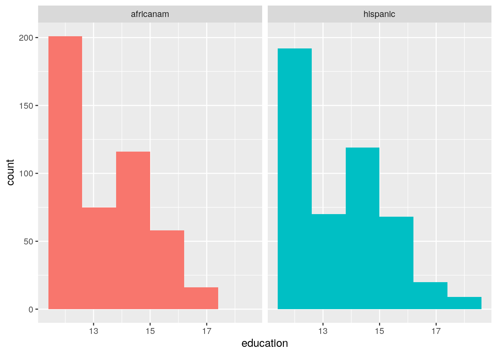
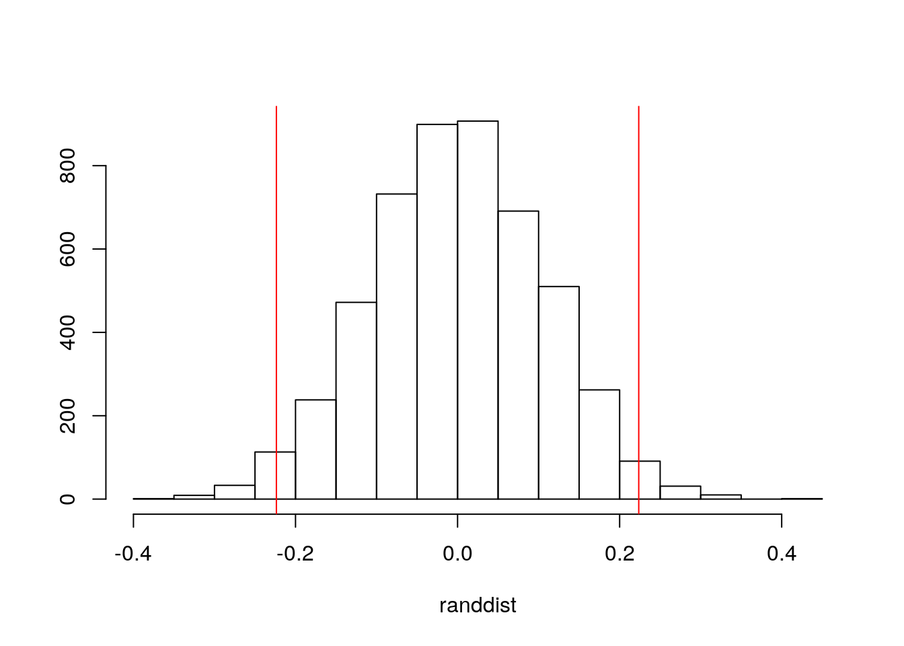
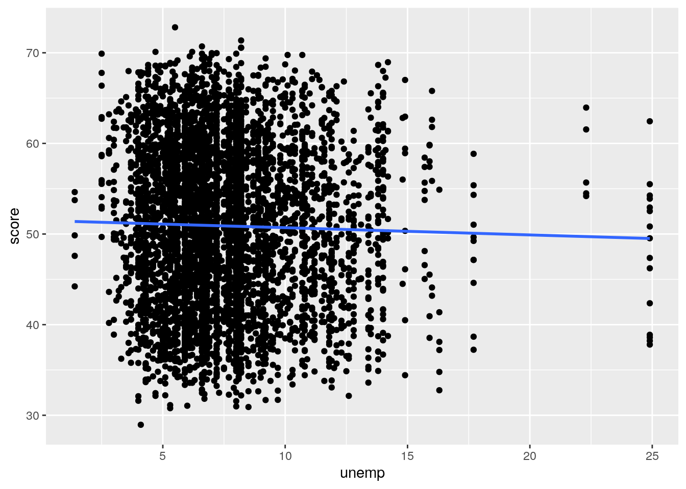
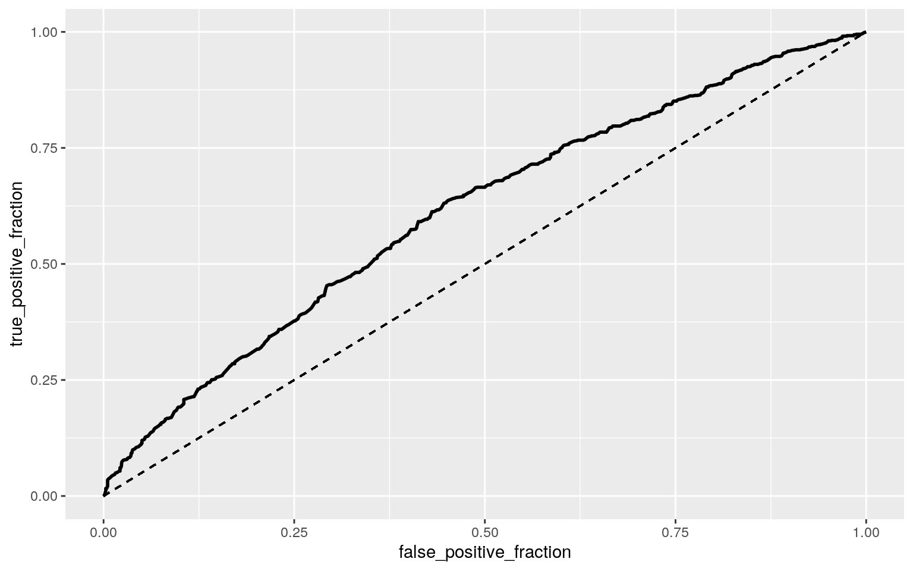
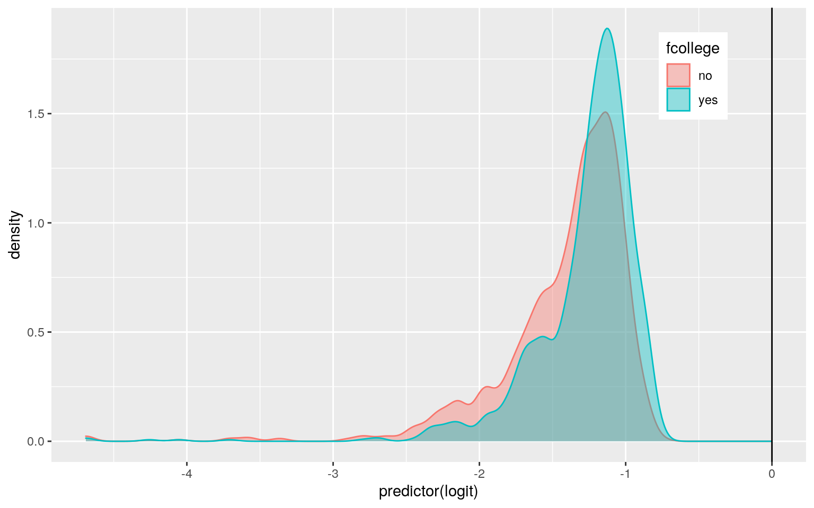
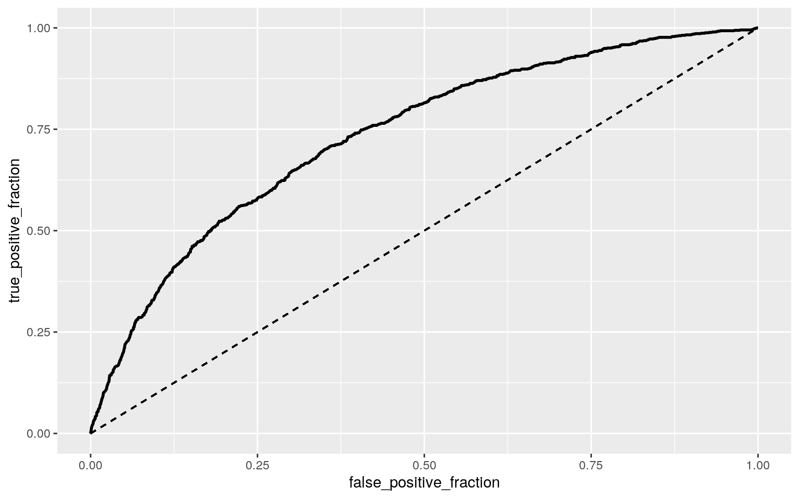

library(dplyr)##
## Attaching package: 'dplyr'## The following objects are masked from 'package:stats':
##
## filter, lag## The following objects are masked from 'package:base':
##
## intersect, setdiff, setequal, unionlibrary(readxl)
collegedat<-read_excel("CollegeDistance.xls")## New names:
## * `` -> ...1head(collegedat)## # A tibble: 6 x 15
## ...1 gender ethnicity score fcollege mcollege home urban unemp wage
## <dbl> <chr> <chr> <dbl> <chr> <chr> <chr> <chr> <dbl> <dbl>
## 1 1 male other 39.2 yes no yes yes 6.20 8.09
## 2 2 female other 48.9 no no yes yes 6.20 8.09
## 3 3 male other 48.7 no no yes yes 6.20 8.09
## 4 4 male afam 40.4 no no yes yes 6.20 8.09
## 5 5 female other 40.5 no no no yes 5.60 8.09
## 6 6 male other 54.7 no no yes yes 5.60 8.09
## # … with 5 more variables: distance <dbl>, tuition <dbl>, education <dbl>,
## # income <chr>, region <chr>Introduction: I chose the college distance dataset from the AER package. The college distance dataset is a collection of data compiled from surveys by the department of education in the year 1980. There are 4,739 observations and 14 variables. Gender, ethinicity, income, and region are categorical variables. The groups within ethnicity are African-American, Hispanic and other. The groups within region are West or other. The groups within income is determining if the income is above 25,000USD per year. The binary varbiables of fcollege, home and urban are representing whether the student's father attended college, whether the student's mother attended college, if the student's family owns their home, or if the student's school is in an urban area respectively. In regards to numeric variables, the score variable represents the base year composite test score of the students, the unemp variable indicates the county unemployment rate in 1980, the wage indicates the state hourly wage in 1980, the distance indicates the distance from a 4-year college in incriments of 10 miles, tuition indicates the average 4-year college tuition in incriments of 1000USD, education indicates the number of years of education -- 12 years meaning the student is a senior, 13 indicating a vocational degree, 14 years indicating an associates degree, 16 representing a bachelor's degree and anything above 16 years indicating graduate school.
man1<-manova(cbind(score, distance)~income, data=collegedat)
summary(man1)## Df Pillai approx F num Df den Df Pr(>F)
## income 1 0.036501 89.71 2 4736 < 2.2e-16 ***
## Residuals 4737
## ---
## Signif. codes: 0 '***' 0.001 '**' 0.01 '*' 0.05 '.' 0.1 ' ' 1I ran a one-way manova test to determine the effect of income levels on two dependent variables: the score of the base year composite test given to high school seniors and distance from the closest 4-year college. Ho: The means of all groups are equal for each response variable of score and distance. Ha: For at least one response variable, score or distance, at least one group mean differs. The MANOVA test indicates a significant difference (p<0.0001) between the income levels on the combined dependent variables of score and distance. Because the MANOVA is significant, a one-way ANOVA is performed below to determine the mean difference across groups.
summary.aov(man1)## Response score :
## Df Sum Sq Mean Sq F value Pr(>F)
## income 1 11415 11414.6 155.66 < 2.2e-16 ***
## Residuals 4737 347362 73.3
## ---
## Signif. codes: 0 '***' 0.001 '**' 0.01 '*' 0.05 '.' 0.1 ' ' 1
##
## Response distance :
## Df Sum Sq Mean Sq F value Pr(>F)
## income 1 161.7 161.702 30.837 2.96e-08 ***
## Residuals 4737 24839.8 5.244
## ---
## Signif. codes: 0 '***' 0.001 '**' 0.01 '*' 0.05 '.' 0.1 ' ' 1According to the univariate ANOVA, both groups are significant with p-values being less than the alpha value of 0.05, the null hypothesis can be rejected, meaning that for at least one of the response variables, score or distance, at least one group mean differs for income level. A post-hoc t-test is performed below to determine which income levels differ. I understand that because I had two groups, I could determine significance from ANOVA, but I ran the t-tests for formality purposes, and to achieve a proper bonferroni value. The t-tests can be seen below.
collegedat%>%group_by(income)%>%summarize(mean(score), mean(distance))## `summarise()` ungrouping output (override with `.groups` argument)## # A tibble: 2 x 3
## income `mean(score)` `mean(distance)`
## <chr> <dbl> <dbl>
## 1 high 53.3 1.51
## 2 low 49.9 1.92pairwise.t.test(collegedat$score, collegedat$income, p.adj="none")##
## Pairwise comparisons using t tests with pooled SD
##
## data: collegedat$score and collegedat$income
##
## high
## low <2e-16
##
## P value adjustment method: nonepairwise.t.test(collegedat$distance, collegedat$income, p.adj="none")##
## Pairwise comparisons using t tests with pooled SD
##
## data: collegedat$distance and collegedat$income
##
## high
## low 3e-08
##
## P value adjustment method: none(0.95)^4## [1] 0.81450621-0.8145062## [1] 0.1854938The mean score for students from high income families is 53.32905, the mean distance for students from high income families is 1.512454 (or 15.12454 miles). The mean score for students from low income families is 49.90189, the mean distance for students from low income families is 1.920362 (19.20362 miles). One MANOVA, two ANOVAs and two post-hoc t-tests were ran for a total of four tests. If you run 4 tests, each with a Type I error rate of 0.05, the probability of at least one type I error is 1-0.95^4 = 0.1854938. The adjusted bonferroni correction is then 0.05/4 = 0.0125. Using the adjusted bonferroni value, everything remains significant, the null hypothesis is rejected.(need to discuss assumptions of MANOVA and significance more)
femh<-collegedat%>%select(gender, ethnicity,education)%>%filter(gender=="female", ethnicity=="hispanic")
nrow(femh)## [1] 478hispanic<-as.vector(femh$education)
femaf<-collegedat%>%select(gender, ethnicity, education)%>%filter(gender=="female", ethnicity=="afam")
africanam<-as.vector(femaf$education)
femedu<-data.frame(condition=c(rep("hispanic",478), rep("africanam", 466)), education=c(hispanic,africanam))
head(femedu)## condition education
## 1 hispanic 17
## 2 hispanic 14
## 3 hispanic 15
## 4 hispanic 12
## 5 hispanic 14
## 6 hispanic 12To determine if there is an association between hispanic and african american females and education level, a mean difference randomization test will be ran. There are 466 african american females in the sample and 478 hispanic females in the sample. I created vectors for hispanic females and african american females by isolating their education levels respectively. I then created a dataframe indicating the ethnicity of the females and their respective education levels.
Ho: Mean education level for Hispanic females and African-American females is the same. Ha: Mean education level is different for Hispanic females and African-American females.
library(ggplot2)
ggplot(femedu, aes(education,fill=condition))+geom_histogram(bins=6.5)+facet_wrap(~condition, ncol=2)+theme(legend.position = "none")
fem1<-femedu%>%group_by(condition)%>%summarize(m=mean(education))%>%summarize(diff(m))## `summarise()` ungrouping output (override with `.groups` argument)randdist<-vector()
for(i in 1:5000){
new<-data.frame(education=sample(femedu$education), condition=femedu$condition)
randdist[i]<-mean(new[new$condition=="hispanic",]$education)-
mean(new[new$condition=="africanam", ]$education)
}
{hist(randdist, main="", ylab=""); abline(v=c(-0.223589, 0.223589), col="red")}
mean(randdist< -0.223589 | randdist>0.223589)## [1] 0.03165,000 random permutations were taken, and the p-value for permutation test is equal to 0.0398, which is less than the alpha value of 0.05. This means that the null hypothesis is rejected, and the results are significant. The difference in means is 0.223589. Mean education level is different for Hispanic females and African-American females.(create a plot visualizing the null dist and test stat)??
#linear regression model
collegedat$lnscore<-log(collegedat$score)
fitlin<-lm(lnscore~education + unemp, data=collegedat)
summary(fitlin)##
## Call:
## lm(formula = lnscore ~ education + unemp, data = collegedat)
##
## Residuals:
## Min 1Q Median 3Q Max
## -0.52349 -0.11221 0.01229 0.11620 0.45295
##
## Coefficients:
## Estimate Std. Error t value Pr(>|t|)
## (Intercept) 3.2976015 0.0188207 175.21 <2e-16 ***
## education 0.0452646 0.0012688 35.68 <2e-16 ***
## unemp -0.0010677 0.0008214 -1.30 0.194
## ---
## Signif. codes: 0 '***' 0.001 '**' 0.01 '*' 0.05 '.' 0.1 ' ' 1
##
## Residual standard error: 0.1562 on 4736 degrees of freedom
## Multiple R-squared: 0.2123, Adjusted R-squared: 0.2119
## F-statistic: 638.1 on 2 and 4736 DF, p-value: < 2.2e-163.2976015 is the predicted score value when education and unemployment =0. 0.0452646 is the slope for education on score while holding unemployment constant. -0.0011 is the slope for unemployment on score while holding education constant. score= 3.2976015 + 0.0452646(education)-0.0011(unemployment)
collegedat%>%ggplot(aes(unemp, score))+geom_point()+geom_smooth(method="lm", se=F)## `geom_smooth()` using formula 'y ~ x'
Ho: While controlling for unemployment, education does not explain variation in score. Ho: While controlling for education, unemployment does not explain variation in score.
library(lmtest)## Loading required package: zoo##
## Attaching package: 'zoo'## The following objects are masked from 'package:base':
##
## as.Date, as.Date.numericsummary(fitlin)$coef[,1:2]## Estimate Std. Error
## (Intercept) 3.297601501 0.018820664
## education 0.045264600 0.001268754
## unemp -0.001067686 0.000821375coeftest(fitlin, vcoc=vcovHC(fit))[,1:2]## Estimate Std. Error
## (Intercept) 3.297601501 0.018820664
## education 0.045264600 0.001268754
## unemp -0.001067686 0.000821375The results of education are significant, there is not a difference seen in corrected SE values. The standard error for education is 0.001268754 while the standard error for unemployment is 0.000821375.
bootdat<-sample_frac(collegedat,replace=T)
sampdist<-replicate(5000,{
bootdat<-sample_frac(collegedat, replace=T)
fitlin1<-lm(lnscore~education + unemp, data=bootdat)
coef(fitlin1)
})
sampdist%>%t%>%as.data.frame%>%summarize_all(sd)## (Intercept) education unemp
## 1 0.0190558 0.001265162 0.0008092889collegedat$fcollege1<-ifelse(collegedat$fcollege=="yes", 1,0)
collegedat$mcollege1<-ifelse(collegedat$mcollege=="yes",1,0)
collegedat$home1<-ifelse(collegedat$home=="yes",1,0)
collegedat$urban1<-ifelse(collegedat$home=="yes",1,0)
head(collegedat)## # A tibble: 6 x 20
## ...1 gender ethnicity score fcollege mcollege home urban unemp wage
## <dbl> <chr> <chr> <dbl> <chr> <chr> <chr> <chr> <dbl> <dbl>
## 1 1 male other 39.2 yes no yes yes 6.20 8.09
## 2 2 female other 48.9 no no yes yes 6.20 8.09
## 3 3 male other 48.7 no no yes yes 6.20 8.09
## 4 4 male afam 40.4 no no yes yes 6.20 8.09
## 5 5 female other 40.5 no no no yes 5.60 8.09
## 6 6 male other 54.7 no no yes yes 5.60 8.09
## # … with 10 more variables: distance <dbl>, tuition <dbl>, education <dbl>,
## # income <chr>, region <chr>, lnscore <dbl>, fcollege1 <dbl>,
## # mcollege1 <dbl>, home1 <dbl>, urban1 <dbl>The first thing I did before running the logistic regression model predicting a binary variable from two explanatory variables was format binary variables using ifelse from fcollege, mcollege, home and urban. The new columns created are fcollege1, mcollege1, home1, and urban1. For the logistic regression model, I will predict fcollege from distance and unemployment.
fitlog<- glm(fcollege1~ distance + unemp, data=collegedat, family="binomial" (link="logit"))
summary(fitlog)##
## Call:
## glm(formula = fcollege1 ~ distance + unemp, family = binomial(link = "logit"),
## data = collegedat)
##
## Deviance Residuals:
## Min 1Q Median 3Q Max
## -0.8737 -0.7368 -0.6575 -0.4592 3.0661
##
## Coefficients:
## Estimate Std. Error z value Pr(>|z|)
## (Intercept) -0.48519 0.11778 -4.120 3.80e-05 ***
## distance -0.13724 0.02226 -6.166 6.99e-10 ***
## unemp -0.08624 0.01556 -5.544 2.96e-08 ***
## ---
## Signif. codes: 0 '***' 0.001 '**' 0.01 '*' 0.05 '.' 0.1 ' ' 1
##
## (Dispersion parameter for binomial family taken to be 1)
##
## Null deviance: 4846.8 on 4738 degrees of freedom
## Residual deviance: 4750.0 on 4736 degrees of freedom
## AIC: 4756
##
## Number of Fisher Scoring iterations: 5logit<-coef(fitlog)%>%round(5)%>%data.frame
logit## .
## (Intercept) -0.48519
## distance -0.13724
## unemp -0.08624coef(fitlog)%>%exp%>%round(5)%>%data.frame## .
## (Intercept) 0.61558
## distance 0.87176
## unemp 0.91737Intercept: odds of father attending college for distance=0 and unemployment=0 is 0.6155829. Controlling for unemployment, for every one additional increase in distance (measured in incriments of 10 miles), odds of father attending college increase by a factor of 0.8717595. Controlling for distance, for every one additional increase in unemployment, the odds of father attending college increases by 0.9173709.The log-odds scale coefs and odds scale coefs can be seen above. Going up 1 distance multiplies odds by a factor of 0.87176, holding unemployment constant. Going up 1 incriment in unemployment multiplies the odds by a factor of 0.91737. The confusion matrix can be seen below.The TPR =0, the TNR = 1, the PPV= 1. The AUC is 0.6117558, which is not great, meaning that it is hard to predict whether or not the father attended college from distance from a 4-year university and unemployment.
library(tidyverse)## ── Attaching packages ────────────────────────────────────────────────────────── tidyverse 1.3.0 ──## ✓ tibble 3.0.3 ✓ purrr 0.3.4
## ✓ tidyr 1.1.1 ✓ stringr 1.4.0
## ✓ readr 1.3.1 ✓ forcats 0.5.0## ── Conflicts ───────────────────────────────────────────────────────────── tidyverse_conflicts() ──
## x dplyr::filter() masks stats::filter()
## x dplyr::lag() masks stats::lag()library(interactions)
library(lmtest)
library(plotROC)
library(ggplot2)
library(knitr)opts_chunk$set(fig.align="center", fig.height=5, message=FALSE, warning=FALSE, fig.width=8, tidy.opts=list(width.cutoff=60),tidy=TRUE)
class_diag<-function(probs,truth){
tab<-table(factor(probs>.5,levels=c("FALSE","TRUE")),truth)
acc=sum(diag(tab))/sum(tab)
sens=tab[2,2]/colSums(tab)[2]
spec=tab[1,1]/colSums(tab)[1]
ppv=tab[2,2]/rowSums(tab)[2]
f1=2*(sens*ppv)/(sens+ppv)
if(is.numeric(truth)==FALSE & is.logical(truth)==FALSE){
truth<-as.numeric(truth)-1}
ord<-order(probs, decreasing=TRUE)
probs <- probs[ord]; truth <- truth[ord]
TPR=cumsum(truth)/max(1,sum(truth))
FPR=cumsum(!truth)/max(1,sum(!truth))
dup<-c(probs[-1]>=probs[-length(probs)], FALSE)
TPR<-c(0,TPR[!dup],1); FPR<-c(0,FPR[!dup],1)
n <- length(TPR)
auc<- sum( ((TPR[-1]+TPR[-n])/2) * (FPR[-1]-FPR[-n]) )
data.frame(acc,sens,spec,ppv,f1,auc)
}probs <- predict(fitlog, type = "response")
table(predict = as.numeric(probs > 0.5), truth = collegedat$fcollege1) %>%
addmargins## truth
## predict 0 1 Sum
## 0 3753 986 4739
## Sum 3753 986 4739library(ggplot2)
ggplot()ROC1 <- ggplot(collegedat) + geom_roc(aes(d = fcollege1, m = probs),
n.cuts = 0) + geom_segment(aes(x = 0, xend = 1, y = 0, yend = 1),
lty = 2)
ROC1
calc_auc(ROC1)## PANEL group AUC
## 1 1 -1 0.6117558collegedat$logit <- predict(fitlog, type = "link")
collegedat %>% ggplot(aes(logit, color = fcollege, fill = fcollege)) +
geom_density(alpha = 0.4) + theme(legend.position = c(0.85,
0.85)) + geom_vline(xintercept = 0) + xlab("predictor(logit)")
fitlog2 <- glm(fcollege1 ~ distance + unemp + wage + score +
tuition + education, data = collegedat, family = binomial(link = "logit"))
summary(fitlog2)##
## Call:
## glm(formula = fcollege1 ~ distance + unemp + wage + score + tuition +
## education, family = binomial(link = "logit"), data = collegedat)
##
## Deviance Residuals:
## Min 1Q Median 3Q Max
## -1.4971 -0.7015 -0.4833 -0.3095 3.0230
##
## Coefficients:
## Estimate Std. Error z value Pr(>|z|)
## (Intercept) -7.763008 0.435060 -17.844 < 2e-16 ***
## distance -0.100337 0.022861 -4.389 1.14e-05 ***
## unemp -0.104604 0.017109 -6.114 9.73e-10 ***
## wage 0.078751 0.031271 2.518 0.0118 *
## score 0.047083 0.005189 9.074 < 2e-16 ***
## tuition 0.023191 0.121079 0.192 0.8481
## education 0.290276 0.023345 12.434 < 2e-16 ***
## ---
## Signif. codes: 0 '***' 0.001 '**' 0.01 '*' 0.05 '.' 0.1 ' ' 1
##
## (Dispersion parameter for binomial family taken to be 1)
##
## Null deviance: 4846.8 on 4738 degrees of freedom
## Residual deviance: 4292.9 on 4732 degrees of freedom
## AIC: 4306.9
##
## Number of Fisher Scoring iterations: 5coef(fitlog2) %>% round(5) %>% data.frame## .
## (Intercept) -7.76301
## distance -0.10034
## unemp -0.10460
## wage 0.07875
## score 0.04708
## tuition 0.02319
## education 0.29028coef(fitlog2) %>% exp %>% round(5) %>% data.frame## .
## (Intercept) 0.00043
## distance 0.90453
## unemp 0.90068
## wage 1.08193
## score 1.04821
## tuition 1.02346
## education 1.33680probs2 <- predict(fitlog2, type = "response")
table(predict = as.numeric(probs2 > 0.5), truth = collegedat$fcollege1) %>%
addmargins## truth
## predict 0 1 Sum
## 0 3661 873 4534
## 1 92 113 205
## Sum 3753 986 4739113/986## [1] 0.1146045ROC2 <- ggplot(collegedat) + geom_roc(aes(d = fcollege1, m = probs2),
n.cuts = 0) + geom_segment(aes(x = 0, xend = 1, y = 0, yend = 1),
lty = 2)
ROC2
calc_auc(ROC2)## PANEL group AUC
## 1 1 -1 0.7350951set.seed(1234)
k = 10
cdat <- collegedat[sample(nrow(collegedat)), ]
folds <- cut(seq(1:nrow(cdat)), breaks = k, labels = F)
diags <- NULL
for (i in 1:k) {
train <- cdat[folds != i, ]
test <- cdat[folds - -i, ]
truth <- test$fcollege1
fit <- glm(fcollege1 ~ ., data = collegedat, family = "binomial")
probs <- predict(fitlog2, newdata = test, type = "response")
diags <- rbind(diags, class_diag(probs2, truth))
}
summarize_all(diags, mean)## acc sens spec ppv f1 auc
## 1 0.7921924 0.04385572 0.9566613 0.1785366 0.0688009 0.5086058The TPR= 113/986=0.1146045, the TNR=3661/3753 =0.97548628, the PPV=113/205=0.55121951. The AUC = 0.7350951, which is fair because it is between 0.7-0.8.
after running the 10 fold CV, the acc= 0.7921924, the auc=0.5086058.
library(glmnet)
y <- as.matrix(collegedat$fcollege1)
x <- model.matrix(fcollege1 ~ ., data = collegedat)[, -1]
head(x)## ...1 gendermale ethnicityhispanic ethnicityother score fcollegeyes
## 1 1 1 0 1 39.15 1
## 2 2 0 0 1 48.87 0
## 3 3 1 0 1 48.74 0
## 4 4 1 0 0 40.40 0
## 5 5 0 0 1 40.48 0
## 6 6 1 0 1 54.71 0
## mcollegeyes homeyes urbanyes unemp wage distance tuition education incomelow
## 1 0 1 1 6.2 8.09 0.2 0.88915 12 0
## 2 0 1 1 6.2 8.09 0.2 0.88915 12 1
## 3 0 1 1 6.2 8.09 0.2 0.88915 12 1
## 4 0 1 1 6.2 8.09 0.2 0.88915 12 1
## 5 0 0 1 5.6 8.09 0.4 0.88915 13 1
## 6 0 1 1 5.6 8.09 0.4 0.88915 12 1
## regionwest lnscore mcollege1 home1 urban1 logit
## 1 0 3.667400 0 1 1 -1.047343
## 2 0 3.889164 0 1 1 -1.047343
## 3 0 3.886500 0 1 1 -1.047343
## 4 0 3.698830 0 1 1 -1.047343
## 5 0 3.700808 0 0 0 -1.023046
## 6 0 4.002046 0 1 1 -1.023046x <- scale(x)
cv <- cv.glmnet(x, y, family = "binomial")
lasso <- glmnet(x, y, family = "binomial", lambda = cv$lambda.1se)
coef(lasso)## 22 x 1 sparse Matrix of class "dgCMatrix"
## s0
## (Intercept) -4.997071
## ...1 .
## gendermale .
## ethnicityhispanic .
## ethnicityother .
## score .
## fcollegeyes 6.018839
## mcollegeyes .
## homeyes .
## urbanyes .
## unemp .
## wage .
## distance .
## tuition .
## education .
## incomelow .
## regionwest .
## lnscore .
## mcollege1 .
## home1 .
## urban1 .
## logit .the variables for fcollegeyes is the only variable retained.
set.seed(1234)
k = 10
data1 <- collegedat[sample(nrow(collegedat)), ]
folds <- cut(seq(1:nrow(collegedat)), breaks = k, labels = F)
diags <- NULL
for (i in 1:k) {
train <- data1[folds != i, ]
test <- data1[folds == i, ]
fitt <- lm(fcollege1 ~ fcollege, data = collegedat)
yhat <- predict(fitt, newdata = test)
diags[i] <- mean((test$fcollege1 - yhat)^2)
}
mean(diags)## [1] 4.950867e-28